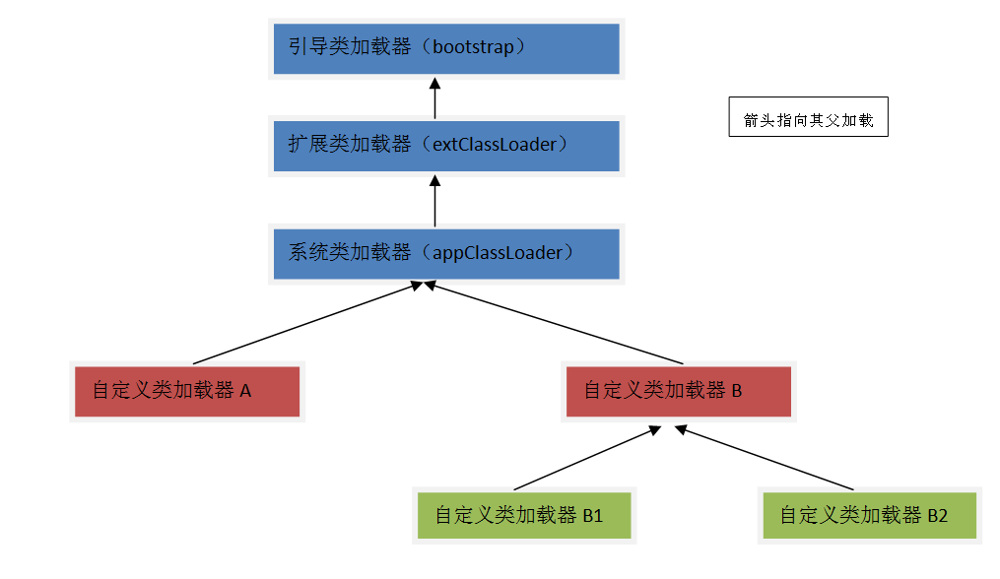

前言
最近在从很多讨论Java类的静态属性和静态块初始化问题的帖子、博文中看到了这样一个概念“Class的加载过程：加载（loading）、链接（linking）、初始化（Initializing）”。而《Java深度历险》二这片文章对它进行了清楚的解释。
Java类的加载
Java的类是由加载器加载的。
类加载器概念
类加载器（class loader）用来加载Java类到Java虚拟机中。 Java虚拟机使用Java类的方式如下：Java源程序（Java文件）经过编译器编译成字节码文件（class文件）。类加载器负责读取字节码文件，并将其转换为java.lang.Class的一个实例。每个这样的实例用来表示一个Java类。通过实例的newInstance()方法就可以创建出该类的对象。实际情况更复杂。
所有的类加载器都是java.lang.ClassLoader类的一个实例。
java.lang.ClassLoader
java.lang.ClassLoader类的基本职责就是根据一个指定的类的名称，找到或者生成对应的字节码，然后从这些文件中定义出一个Java类，也就是java.lang.Class的实例。除此之外，ClassLoader还负责加载Java应用所需的资源如图像文件和配置文件等。
类加载器最终要完成的功能是 定义一个Java类 ，即把Java字节码转换成JVM中的一个java.lang.Class类的实例。类加载器有两个重要的特征：层次结构和代理模式。
类加载器的树状组织结构
一般来说，类加载器分为两类：启动类加载器（bootstrap）和用户自定义的类加载器（user-defined）。
启动类加载器（也就是系统提供的类加载器）：是由JVM的原生代码实现，主要有下面三个：
- 引导类加载器（bootstrap class loader）：它用来加载Java的核心库（$JAVA_HOME中jre/lib/rt.jar中的所有class），用原生代码实现，并不继承自java.lang.ClassLoader。
- 扩展类加载器（extensions class loader）：它用来加载Java的扩展库（$JAVA_HOME中jre/lib/*.jar或-Djava.ext.dirs指定目录下的jar），JVM的实现会提供一个扩展库目录。该类加载器会在此目录里查找并加载Java类。
- 系统类加载器（system class loader）：它根据Java应用的类路径（CLASSPATH）来加载Java类。一般来说，Java应用的类都是由它来完成加载的。可以通过ClassLoader.gerSystemCLassLoader()来获取它。
用户自定义的类加载器都继承自java.lang.ClassLoader类。
层次组织结构指的是每个类加载器都有一个父类加载器，通过getParent()方法可以获得到。类加载器通过这种父-子的方式组织在一起，形成一种树状结构。
类加载器树状结构示意图： 
示意程序：
public class TreeLoader {
public static void main(String[] args) {
ClassLoader loader = TreeLoader.class.getClassLoader();
while (loader != null) {
System.out.println(loader.toString());
loader = loader.getParent();
}
}
}
运行结果为：
sun.misc.Launcher$AppClassLoader@177b3cd //系统类加载器 sun.misc.Launcher$ExtClassLoader@1bd7848 //扩展类加载器
类加载器的代理模式
代理模式是指一个类加载器既可以自己完成类加载，也可以将其代理给其他加载器完成。
父类加载器优先策略：一般的类加载器在尝试自己加载某个类之前，会先代理给其父类加载器。当父类加载器找不到时，才会尝试自己加载。这个策略是封装在java.lang.ClassLoader的loadClass()方法中的。
自己优先策略：自己先尝试加载找不到时才交给父类加载器。这种策略在Java的Web容器中比较常见，也是Servlet规范推荐的做法。
类加载的一个重要用途是在JVM中为相同名称的Java类创建隔离空间。在JVM中，判断两个类是否相同，不仅是根据类的二进制名称，还要根据两个类的类定义加载器。只有两者完全一致，才认为是相同的。
示例：
public void testClassIdentity() {
String classDataRootPath = "C:\\workspace\\Classloader\\classData";
FileSystemClassLoader fscl1 = new FileSystemClassLoader(classDataRootPath);
FileSystemClassLoader fscl2 = new FileSystemClassLoader(classDataRootPath);
String className = "com.example.Sample";
try {
Class<?> class1 = fscl1.loadClass(className);
Object obj1 = class1.newInstance();
Class<?> class2 = fscl2.loadClass(className);
Object obj2 = class2.newInstance();
Method setSampleMethod = class1.getMethod("setSample", java.lang.Object.class);
setSampleMethod.invoke(obj1, obj2);
} catch (Exception e) {
e.printStackTrace();
}
}
上面运行的结果是得到一个java.lang.ClassCastException的异常。
代理模式是为了保证Java核心库的类型安全。所有Java应用都至少需要引用java.lang.Object类，也就是说运行时，java.lang.Object这个类需要被加载到虚拟机中。如果这个加载过程有应用自己的类加载器完成的话，就可能存在多个版本的Object类，而这些类是不可兼容的。通过代理模式，对于Java核心类的加载工作都有引导类加载器（bootstrap）统一完成，保证了Java应用所使用的都是同一个版本的Java核心库的类。
加载类的过程
由于代理模式的存在， 启动一个类加载过程的类加载器和最终定义这个类的加载器可能不是同一个 。真正完成类的加载工作是通过调用defineClass来实现的，而启动类的加载过程是通过调用loadClass来实现的。前者称为初始类加载器（initating loader），后者称为定义类加载器（defining loader)。
类加载器在成功加载某个类之后，会把得到的java.lang.Class类的实例缓存起来。下次在请求加载该类时，直接使用缓存。也就是说对于一个类加载实例来说，相同全名的类只加载一次。
线程上下文类加载器
线程上下文类加载器（context class loader）是从JDK 1.2 开始引用的。类java.lang.Thread 中的方法 getContextClassLoader()和setContextClassLoader(ClassLoader cl)用来获取和设置线程的上下文类加载器。如果没有通过setContextClassLoader(ClassLoader cl)方法进行设置的话，线程将继承其父线程的上下文类加载器。Java应用运行的初始线程的上下文加载器是系统类加载器（appClassLoader）。
该方式是为解决SPI（服务提供者接口 Service Provider Interface，常见的SPI有JDBC、JCE、JNDI、JBI等）的实现类加载的问题： 我们知道SPI的接口是Java核心库的一部分，是有引导类加载器（bootstrap）来加载的；而SPI实现的Java类一般是由系统类加载器（appClassLoader）加载的。引导类加载器无法找到SPI的实现类，因为它只加载器Java的核心库，也不能代理给系统类加载器，因为它是祖先类加载器。
线程上下文类加载器解决了这个问题。不做任何设置，Java应用的线程的上下文类加载器默认就是系统上下文类加载器（appClassLoader)。在SPI接口的代码中使用线程上下文类加载器，就可以成功加载到SPI的实现类。
Class.forName
Class.forName是一个静态方法，同样可以用来加载类。 该方法有两种形式：
- Class.forName(String name, boolean initialize, ClassLoader loader) 形式的参数 name表示的是类的全名；initialize表示是否初始化类；loader表示加载时使用的类加载器。
- Class.forName(String className) 相当于设置了参数 initialize的值为 true，loader的值为当前类的类加载器
它的一个很常用的方法是在加载数据库驱动的时候。
Class.forName("org.apache.derby.jdbc.EmbeddedDriver").newInstance()用来加载 Apache Derby 数据库的驱动。
forName与loadCLass的区别
-
Class.forName("someCLass")will- use the class loader that loaded the class which calls this code
- initialize the class(that is,alll static initializers will be run)
-
ClassLoader.getSystemCLassLoader().loadClass("someClass")will- use the system class loader
- not initialize class
Java类的链接
Java类的链接是一个将类或接口与运行时JVM的状态进行绑定的过程，以使得它可以被执行（Linking is the process of taking a class or interface and combining it into the run-time state of the Java Virtual Machine so that it can be executed）。包括：验证（verifiaction）、准备（preparation）、解析（resolution）三个步骤。
因为链接涉及到分配新的数据空间，所以可能出现OutOfMemoryError。（Because linking involves the allocation of new data structures, it may fail with an OutOfMemoryError.）
-
验证（verifiaction）：检测被引用类型正确性和接入属性是否正确（public、private的问题）等，用来确保Java类的二进制表示在结构上完全正确。 -
准备（preparation）：为类或结构创建静态域，并附上默认值。准备过程不会执行代码。 -
解析（resolution）：由于Java中会包含对其他类或接口的引用，解析过程需要确保这些外部的类可以被正确找到，所以可能会导致其他Java类的加载。 不同JVM在解析可能有不同策略。一种是在链接时，就递归把所有依赖的类都进行解析。另一种是只在真正被使用时菜解析。
示例：
public class LinkTest {
public static void main(String[] args) {
ToBeLinked toBeLinked = null;
System.out.println("Test link.");
}
}
类 LinkTest引用了类ToBeLinked，但是并没有真正使用它，只是声明了一个变量，并没有创建该类的实例或是访问其中的静态域。在 Oracle的JDK 6中，如果把编译好的ToBeLinked的Java字节代码删除之后，再运行LinkTest，程序不会抛出错误。这是因为ToBeLinked类没有被真正用到，而Oracle的JDK 6所采用的链接策略使得ToBeLinked类不会被加载，因此也不会发现ToBeLinked的Java字节代码实际上是不存在的。如果把代码改成ToBeLinked toBeLinked = new ToBeLinked();之后，再按照相同的方法运行，就会抛出异常了。因为这个时候ToBeLinked这个类被真正使用到了，会需要加载这个类。
Java类的初始化
和Java对象有初始化一样，Java类页游初始化，Java类的初始化也是延迟，只有第一次被主动使用（active use），JVM才会进行类的初始化操作。
Java类和接口的初始化只有在特定的时机才会发生，这些时机包括:
//创建一个Java类的实例 MyClass obj = new MyClass(); //调用一个Java类中的静态方法 MyClass.sayHello(); //给Java类或接口中声明的静态域赋值 MyCLass.value = 10 //访问Java类或接口中声明的静态域，并且该域不是常值变量。 int value = MyClass.value; //在顶层Java类中执行assert语句。 //通过Java反射API也可能造成类和接口的初始化。
初始化过程的主要操作：执行静态代码块、初始化静态域。在一个类被初始化之前，它的直接父类也需要被初始化。但是，一个接口的初始化，不会引起其父接口的初始化。在初始化的时候，会按照源代码从上到下的顺序执行静态代码块和初始化静态域。
示例：
public class StaticTest {
public static int X = 10;
public static void main(String[] args) {
System.out.println(Y); //输出60
}
static {
X = 30;
}
public static int Y = X * 2;
}
在上面的代码中，在初始化的时候，静态域的初始化和静态代码块的执行会从上到下依次执行。因此变量X的值首先初始化成10，后来又被赋值成30；而变量Y的值则被初始化成60。
需要注意的是，当访问一个Java类或接口的静态域时，只有真正声明这个域的类或接口才会被初始化。
class B {
static int value = 100;
static {
System.out.println("Class B is initialized."); //输出
}
}
class A extends B {
static {
System.out.println("Class A is initialized."); //不会输出
}
}
public class InitTest {
public static void main(String[] args) {
System.out.println(A.value); //输出100
}
}
在上述代码中，类InitTest通过A.value引用了类B中声明的静态域value。由于value是在类B中声明的，只有类B会被初始化，而类A则不会被初始化。
日期：2013-5-3、2013-5-6
参考：深入探讨 Java 类加载器、Java深度历险（二）——Java类的加载、链接和初始化、Java类的装载(Loading)、链接(Linking)和初始化(Initialization)、Chapter 5. Loading, Linking, and Initializing、Class.forName() vs ClassLoader.loadClass() - which to use for dynamic loading?